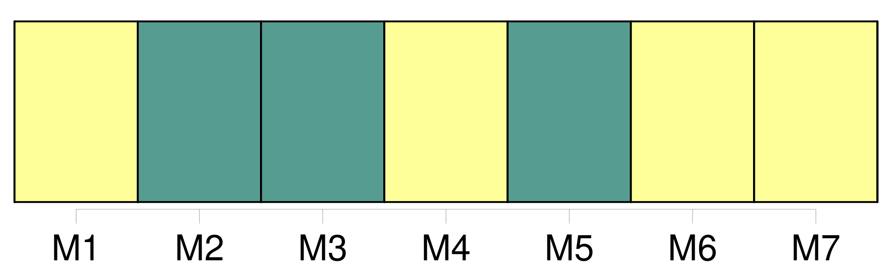
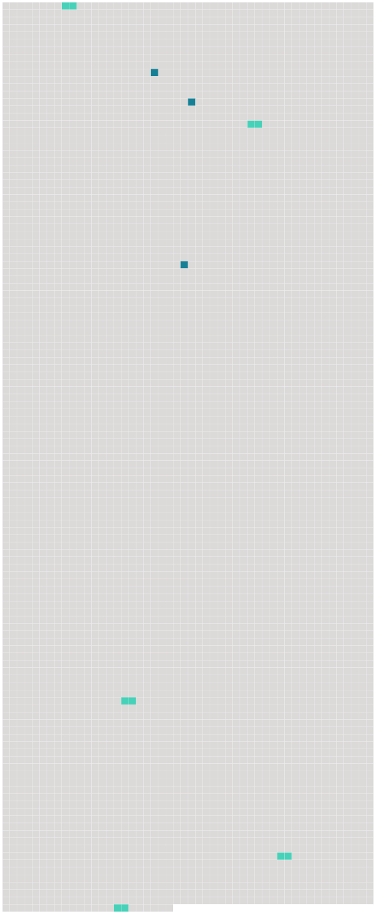

Longueur nb maillons : 8 mentions |
  |
Puis, de nouveaux îlots, que dore [le soleil] [23 phrases] Un rayon de [soleil] se glisse sur le lit, à travers les rideaux. [5 phrases] – Rien n’ est indifférent, tout se vaut, un homme ou une mouche ; tout vit également : le chat, le feu, la table, les grains de poussière qui dansent dans un rayon de [soleil] [10 phrases] Les ombres fuient, [le soleil] monte. [58 phrases] On est libre, on est heureux, il fait [soleil] …… [137 phrases] Les feuilles doucement frémissent et tremblent [au soleil] , une vapeur légère passe dans l’ air, les mouches indécises se balancent, en ronflant comme un orgue ; les sauterelles ivres d’ été crissent avec une âpre allégresse : tout se tait …… [56 phrases] – L’ ombre des arbres, quand [le soleil] tombait, était aussi un objet de méditations. [22 phrases] [Le soleil] s’ enfonçait dans les champs. |
 |
La ressource peut être téléchargée sur la page Ortolang
Si vous avez des questions ou vous voyez des erreurs, merci d'envoyer un mail à silvia.federzoni89@gmail.com
Site développé par S. Federzoni (contact)